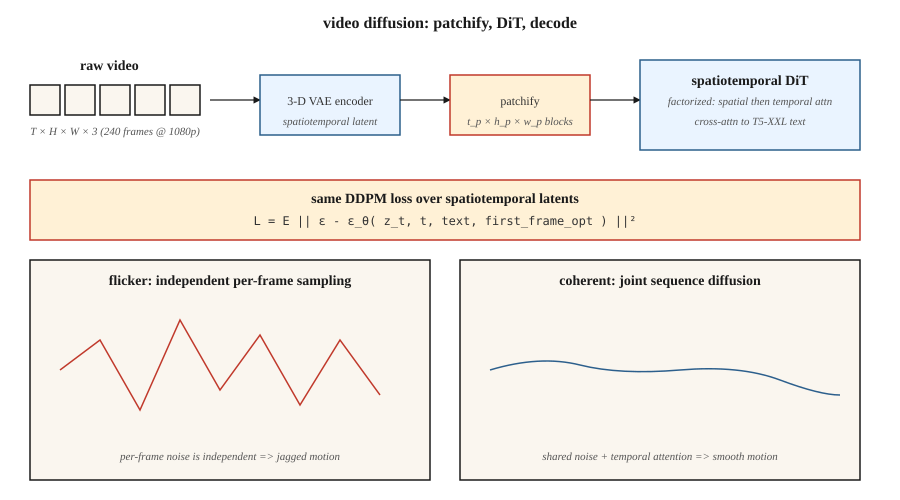

Video Generation
An image is a 2-D tensor. A video is a 3-D one. The theory is the same; the compute is 10-100x harder. OpenAI's Sora (Feb 2024) proved it was possible. By 2026 Veo 2, Kling 1.5, Runway Gen-3, Pika 2.0, and WAN 2.2 ship production video from text at 1080p — and the open-weights stack (CogVideoX, HunyuanVideo, Mochi-1, WAN 2.2) is 12 months behind.
- Type
- Build
- Languages
- Python
- Prerequisites
- Phase 8 · 07 (Latent Diffusion), Phase 7 · 09 (ViT), Phase 8 · 06 (DDPM)
- Time
- ~45 minutes
#The Problem
A 10-second 1080p video at 24fps is 240 frames of 1920×1080×3 pixels. That's ~1.5 GB of raw data per clip. Pixel-space diffusion is infeasible. You need:
- Spatiotemporal compression. A VAE that encodes videos, not frames, into a sequence of spatial-temporal patches.
- Temporal coherence. Frames need to share content, lighting, and object identity over seconds. The net has to model motion.
- Compute budget. Video training is 10-100x more expensive than image for the same model size.
- Conditioning. Text, image (first-frame), audio, or another video. Most production models accept all four.
The architecture that solved this is the Diffusion Transformer (DiT) applied to spatiotemporal patches, trained on huge (prompt, caption, video) datasets. Same diffusion loss as Lesson 06.
#The Concept

#Patchify
Encode the video with a 3D VAE (learned spatiotemporal compression). The latent is shape [T_latent, H_latent, W_latent, C_latent]. Split into patches of size [t_p, h_p, w_p]. For Sora-style models, t_p = 1 (per-frame patches) or t_p = 2 (every two frames). A 10-second 1080p video compresses to ~20,000-100,000 patches.
#Spatiotemporal DiT
A transformer processes the flat sequence of patches. Each patch has a 3D positional embedding (time + y + x). Attention is usually factorized:
- Spatial attention within each frame's patches.
- Temporal attention across frames at the same spatial location.
- Full 3D attention is 16-100x more expensive; used only at low resolution or in research.
#Text conditioning
Cross-attention with a large text encoder (T5-XXL for Sora, CogVideoX-5B uses T5-XXL). Long prompts matter — Sora's training set had GPT-generated dense re-captions averaging 200 tokens per clip.
#Training
Standard diffusion loss (ε or v prediction) over spatiotemporal latents. Data: web video + ~100M curated clips + synthetic text captions. Compute: 10,000+ GPU hours for even a small research run; Sora-scale is 100,000+.
#The 2026 production landscape
| Model | Date | Max duration | Max res | Open weights? | Notable |
|---|---|---|---|---|---|
| Sora (OpenAI) | 2024-02 | 60s | 1080p | No | First model to show world simulator properties at scale |
| Sora Turbo | 2024-12 | 20s | 1080p | No | Production Sora at 5x faster inference |
| Veo 2 (Google) | 2024-12 | 8s | 4K | No | Highest quality + physics in 2025 |
| Veo 3 | 2025 Q3 | 15s | 4K | No | Native audio and stronger camera control |
| Kling 1.5 / 2.1 (Kuaishou) | 2024-2025 | 10s | 1080p | No | Best human motion in 2025 Q1 |
| Runway Gen-3 Alpha | 2024-06 | 10s | 768p | No | Professional video tools on top |
| Pika 2.0 | 2024-10 | 5s | 1080p | No | Strongest character consistency |
| CogVideoX (THUDM) | 2024 | 10s | 720p | Yes (2B, 5B) | First open 5B-scale video |
| HunyuanVideo (Tencent) | 2024-12 | 5s | 720p | Yes (13B) | Open SOTA late 2024 |
| Mochi-1 (Genmo) | 2024-10 | 5.4s | 480p | Yes (10B) | Most permissively licensed |
| WAN 2.2 (Alibaba) | 2025-07 | 5s | 720p | Yes | Strongest open model mid-2025 |
Open weights are closing the gap faster than in the image space: HunyuanVideo + WAN 2.2 LoRAs already power most open-source workflows by mid-2026.
#Build It
code/main.py simulates the core spatiotemporal DiT idea: patchify a small synthetic video, add a per-patch position embedding, and denoise the whole sequence with a transformer-style attention over patches. No numpy; pure Python. We show that temporal coherence emerges even in 1-D when adjacent-frame patches share a denoiser and position embeddings.
#Step 1: patchify a synthetic 1-D "video"
def make_video(T_frames=8, rng=None):
# a "video" is a sequence of 1-D values following a smooth trajectory
base = rng.gauss(0, 1)
return [base + 0.3 * t + rng.gauss(0, 0.1) for t in range(T_frames)]#Step 2: position embedding per frame
def pos_embed(t, dim):
return sinusoidal(t, dim)#Step 3: denoiser sees the whole sequence
Instead of denoising each frame independently, our tiny net concatenates all frame values + their position embeddings and predicts the noise for all frames jointly.
#Step 4: temporal coherence test
After training, sample a video. Measure the frame-to-frame delta. If the model has learned temporal structure, the deltas stay smaller than sampling each frame independently.
#Pitfalls
- Independent per-frame sampling = flicker. If you run image diffusion on each frame separately, the output flickers because each frame's noise is independent. Video diffusion fixes this by coupling the frames through attention or shared noise.
- Naive 3D attention = OOM. Full 3D attention on a 10-second 1080p latent is hundreds of billions of operations. Factorize into spatial + temporal.
- Data captioning matters more than size. Sora's main upgrade over prior work was training on ~10x more detailed captions (GPT-4 re-labelled clips). OpenAI's technical report is explicit on this.
- First-frame conditioning. Most production models also accept an image as the first frame. This is "image-to-video" mode; training includes this variant.
- Physics drift. Long clips (>10s) accumulate subtle inconsistencies. Sliding-window generation + keyframe anchoring helps.
#Use It
| Use case | 2026 pick |
|---|---|
| Highest-quality text-to-video, hosted | Veo 3 or Sora |
| Camera-controlled cinematic | Runway Gen-3 with motion brushes |
| Character consistency across clips | Pika 2.0 or Kling 2.1 |
| Open weights, fast fine-tune | WAN 2.2 + LoRA |
| Image-to-video | WAN 2.2-I2V, Kling 2.1 I2V, or Runway |
| Audio-to-video lip sync | Veo 3 (native audio) or a dedicated lip-sync model |
| Video editing | Runway Act-Two, Kling Motion Brush, Flux-Kontext (still-frame) |
Cost per second of video at quality parity has dropped 20x between 2024 and 2026.
#Ship It
Save outputs/skill-video-brief.md. Skill takes a video brief (duration, aspect ratio, style, camera plan, subject consistency, audio) and outputs: model + hosting, prompt scaffolding (camera language, subject description, motion descriptors), seed + reproducibility protocol, and a frame-level QA checklist.
#Exercises
- Easy. In
code/main.py, compare frame-to-frame delta for (a) independent per-frame sampling, (b) joint sequence sampling. Report the mean and variance of the deltas. - Medium. Add a first-frame condition: pin frame 0 to a given value and sample the rest. Measure how the pinned value propagates.
- Hard. Use HuggingFace diffusers to run CogVideoX-2B on a local GPU. Time 20 inference steps at 720p for a 6-second clip. Profile the spatiotemporal attention to identify the bottleneck.
#Key Terms
| Term | What people say | What it actually means |
|---|---|---|
| Video VAE | "3-D VAE" | Encoder that compresses (T, H, W, C) → spatiotemporal latent. |
| Patches | "The tokens" | Fixed-size 3-D blocks of the latent; input to the DiT. |
| Factorized attention | "Spatial + temporal" | Run attention over space, then over time; skip full 3-D attention. |
| Image-to-video (I2V) | "Animate this photo" | Model takes an image + text, outputs a video that starts from it. |
| Keyframe conditioning | "Anchor frames" | Pin specific frames to control the video's arc. |
| Motion brush | "Directional hint" | UI input where the user paints motion vectors onto the image. |
| Re-captioning | "Dense captions" | Using an LLM to re-label training clips with detailed prompts. |
| Flicker | "Temporal artifact" | Frame-to-frame inconsistency; fixed with coupled denoising. |
#Production note: video latents are a memory-bandwidth problem
A 10-second 1080p clip at 24 fps is 240 frames × 1920 × 1080 × 3 ≈ 1.5 GB of raw pixels. After a 4× video VAE compression (2 × spatial × 2 × temporal) the latent is ~100 MB per request. Run this through a spatiotemporal DiT for 30 steps at batch 1 and you are moving ~3 GB/step through HBM — memory bandwidth, not FLOPs, is the bottleneck.
Three production knobs, all straight from production-inference literature inference chapter:
- TP across the DiT. Text-to-video models are routinely ≥10B params. TP=4 across 4 H100s is standard; PP=2 × TP=2 for 405B-class models. Latency per step drops roughly linearly with TP up to the all-reduce wall.
- Frame batching = continuous batching. At generation time, video is conceptually a batch of frames linked by attention. Continuous batching (in-flight scheduling) applies: start rendering frame
t+1while framet-1is being returned, if the model architecture allows sliding-window generation. - Clip-level prefill cache. For image-to-video, the first-frame conditioning is analogous to an LLM's prompt prefill: compute it once, reuse across the temporal decoder passes. This is effectively a KV-cache for video.
#Further Reading
- Brooks et al. (2024). Video generation models as world simulators — Sora technical report.
- Yang et al. (2024). CogVideoX: Text-to-Video Diffusion Models with An Expert Transformer — CogVideoX.
- Kong et al. (2024). HunyuanVideo: A Systematic Framework for Large Video Generative Models — HunyuanVideo.
- Genmo (2024). Mochi-1 Technical Report — Mochi-1.
- Alibaba (2025). WAN 2.2 — open SOTA mid-2025.
- Ho, Salimans, Gritsenko et al. (2022). Video Diffusion Models — the seminal video diffusion paper.
- Blattmann et al. (2023). Align your Latents (Video LDM) — Stable Video Diffusion's ancestor.